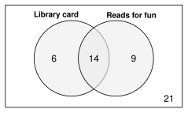
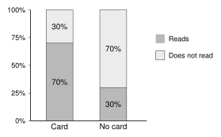
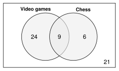
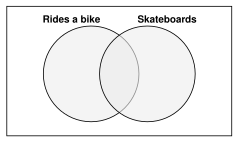
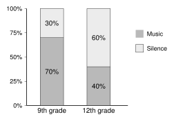

One survey, every tool. 50 students answered two questions: Do you have a library card? Do you read for fun?
3.1 Read the table.
Each cell counts students who match both labels. Each row and each column adds to its total. |
| Reads | Does not read | Total |
|---|
| Card | 14 | 6 | 20 |
|---|
| No card | 9 | 21 | 30 |
|---|
| Total | 23 | 27 | 50 |
|---|

14 students have a card and read for fun.
Check: and .
The Venn diagram shows the same counts. 21 students are outside both circles.
|
3.1 Divide by the grand total.
A relative frequency table shows the percent of all the students. |
| Reads | Does not read | Total |
|---|
| Card | | | |
|---|
| No card | | | |
|---|
| Total | | | 100% |
|---|
28% of all the students have a card and read for fun. The whole table adds to 100%.
|
3.2 Marginal: use the totals.
Divide each total by the grand total. |
Reads: Does not read:
Card: No card:
|
3.2 Conditional: use one group.
Divide by that group's total.
Different percents in the groups mean the two variables are associated. |

Card: read for fun.
No card: read for fun.
70% and 30% are very different. Having a library card and reading for fun are associated.
|
Check the denominator. “Of the students with a card, what percent read for fun?” Divide by the card total (20). Do not divide by 50. Do not divide by the reads total (23).
An association does not prove that one thing causes the other.
Unit 3 Review - PracticeName
Work with a partner. Compare answers when you finish each problem.
3.1 - Two-Way Tables and Relative Frequency
1. I read a two-way table, and I fill in missing numbers in it.
120 students in 9th and 10th grade said which after-school club they are in. Each student is in one club.
- Fill in the missing numbers.
| Art | Chess | Garden | Total |
|---|
| 9th grade | 18 | | | 55 |
|---|
| 10th grade | | 14 | 25 | |
|---|
| Total | 44 | | 40 | 120 |
|---|
- How many students are in the chess club?
- How many 9th graders are not in the art club?
- Which club has the most 10th graders?
75 students in 11th and 12th grade said what kind of phone they have.
- Fill in the missing numbers.
| Android | iPhone | Total |
|---|
| 11th grade | 16 | | 30 |
|---|
| 12th grade | | | |
|---|
| Total | | 39 | 75 |
|---|
- How many 12th graders have an iPhone?
- How many students have an Android phone?
2. I move between a Venn diagram and a two-way table, and I make a relative frequency table.
This Venn diagram shows how many of 60 students play video games and how many play chess.

- Make a two-way table from the Venn diagram.
| Chess | No chess | Total |
|---|
| Games | | | |
|---|
| No games | | | |
|---|
| Total | | | |
|---|
- Make a relative frequency table. Divide each count by 60. Write percents.
| Chess | No chess | Total |
|---|
| Games | | | |
|---|
| No games | | | |
|---|
| Total | | | |
|---|
- What percent of all the students play chess but not video games?
- What percent of all the students play at least one of the two games?
- Which statement is supported by the relative frequency table? Circle the letter.
| A | 9% of the students play both video games and chess. |
| B | 25% of the students play chess. |
| C | 40% of the students play neither game. |
| D | 10% of the students play video games but not chess. |
Problem 2, continued.
80 students were asked if they ride a bike and if they skateboard. 46 ride a bike. 22 skateboard. 14 do both.
- Fill in the Venn diagram.

- How many students do neither?
- Fill in the two-way table.
| Skate | No skate | Total |
|---|
| Bike | | | |
|---|
| No bike | | | |
|---|
| Total | | | |
|---|
- What percent of all the students ride a bike and skateboard?
3.2 - Marginal and Conditional Distributions
3. I find a marginal distribution and a conditional distribution.
120 students in 9th and 10th grade chose their favorite kind of game.
| Board | Video | Card | Total |
|---|
| 9th grade | 10 | 22 | 8 | 40 |
|---|
| 10th grade | 26 | 34 | 20 | 80 |
|---|
| Total | 36 | 56 | 28 | 120 |
|---|
- Find the marginal distribution of favorite kind of game.
- Find the marginal distribution of grade.
- Find the conditional distribution of favorite game for 9th graders.
- Find the conditional distribution of favorite game for 10th graders.
- Find the conditional distribution of grade for the students who chose card games.
Is each statement a marginal or a conditional percent? Circle one.
About 47% of all the students chose video games.Marginal Conditional
Of the 10th graders, 25% chose card games.Marginal Conditional
30% of the students chose board games.Marginal Conditional
55% of 9th graders chose video games.Marginal Conditional
4. I choose the right total to divide by, and I decide if two categorical variables are associated.
A class grew 60 bean plants. Some plants got plant food. The class recorded which plants grew flowers.
| Flowers | No flowers | Total |
|---|
| Plant food | 30 | 10 | 40 |
|---|
| No plant food | 9 | 11 | 20 |
|---|
| Total | 39 | 21 | 60 |
|---|
- What percent of the plants with plant food grew flowers?
- What percent of the plants without plant food grew flowers?
- Is plant food associated with growing flowers? Explain.
- What percent of the plants with flowers got plant food?
- Why are the answers to (a) and (d) different?
- Of the plants with no flowers, what percent got no plant food? Which fraction gives the answer? Circle the letter.
A B C D
Problem 4, continued.
130 students in 9th and 10th grade said if they write with a pen or a pencil.
| Pen | Pencil | Total |
|---|
| 9th grade | 15 | 35 | 50 |
|---|
| 10th grade | 24 | 56 | 80 |
|---|
| Total | 39 | 91 | 130 |
|---|
- What percent of 9th graders use a pen?
- What percent of 10th graders use a pen?
- Is grade associated with using a pen or a pencil? Explain.
Test-Style Questions
A test asks the same questions with more words. Read slowly. Circle the best answer.
5. A survey asked 90 students in 11th and 12th grade where they like to watch movies: at a theater or at home. Each student chose one place. The two-way table shows the results, but some of the values are missing.
| Theater | Home | Total |
|---|
| 11th grade | 12 | | 40 |
|---|
| 12th grade | | | |
|---|
| Total | 30 | | 90 |
|---|
Based on the table, how many 12th graders like to watch movies at home?
6. A school surveyed 200 students about their phones. The two-way table shows whether each phone has a case and whether its screen is cracked.
| Cracked | Not cracked | Total |
|---|
| Case | 14 | 106 | 120 |
|---|
| No case | 36 | 44 | 80 |
|---|
| Total | 50 | 150 | 200 |
|---|
What percent of all the students surveyed have a phone with a case and a cracked screen?
7. A music teacher asked 150 students in 11th and 12th grade which instrument they would most like to learn. The results are shown in the two-way table.
| Guitar | Piano | Drums | Total |
|---|
| 11th | 30 | 18 | 12 | 60 |
|---|
| 12th | 36 | 45 | 9 | 90 |
|---|
| Total | 66 | 63 | 21 | 150 |
|---|
Based on the table, what percent of the 12th graders surveyed want to learn piano?
| A | 30% |
| B | 42% |
| C | 50% |
| D | about 71% |
8. A survey asked students in 9th grade and 12th grade if they like to study with music or in silence. The segmented bar chart shows the conditional distribution of study choice for each grade.

Which statement is supported by the segmented bar chart?
| A | There is no association, because each bar adds up to 100%. |
| B | Grade and study choice are associated, because the percent of students who study with music is different in the two grades. |
| C | More 9th graders than 12th graders were surveyed. |
| D | Most 12th graders like to study with music. |